01 / SURVIVING
幸存
每一次重来，都留下建设的痕迹。
俯视角射击 / 生存建造 / Roguelite
建议先读精简版了解核心设计，再按需深入完整正文。精简版将在新标签页打开。
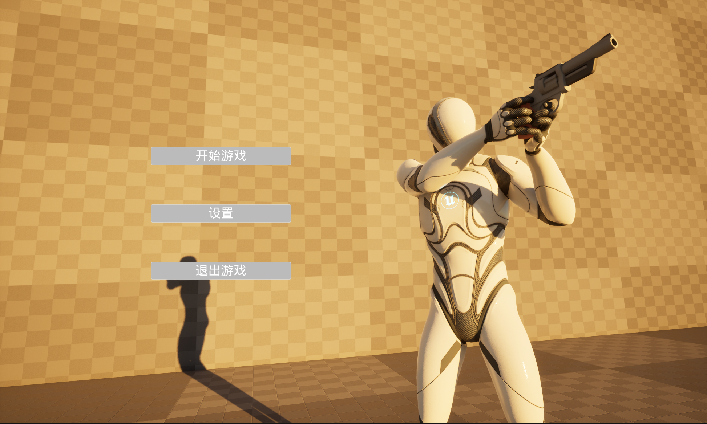
项目说明与原文阅读指引
《幸存》：俯视角射击生存建造 Roguelite 游戏·设计文档（个人项目 GDD）
《幸存》设计文档（个人项目 GDD）
Demo以及玩法演示
文档摘要
项目规格：
项目类型：个人项目｜UE5 可玩 Demo + GDD
时间：2026.08
引擎：Unreal Engine 5.8.1（蓝图开发）
文档规模：约 80 页，覆盖 10+ 核心系统
文档结构：
本文档为个人独立完成的 Demo 项目《幸存》的设计文档，按 GDD（游戏设计文档）的系统化结构组织——系统以“设计目的 → 功能呈现 → 实现原理”的顺序展开，并保留设计论证与开发复盘章节。受个人项目范围所限，未包含版本管理与跨职能需求规格。
正文以文字规格为主，辅以实机演示 GIF 与 UE5 蓝图节点截图；实机演示视频片段见文末附录。
阅读指引：
第一章（游戏概要）——快速了解 Demo 主要设计目的与游戏概念。
第二章（核心机制）——包含功能呈现、实现原理与部分设计目的。主要以蓝图节点截图和原理分析为主，偏向技术层面。
第三章（玩家体验与心流设计）——包含游戏节奏、核心循环、心流构建策略。以文字与流程图为主，偏向策划设计层面。
第四章（后续发展）——主要为开发复盘与改进方向。
第五章（总结）——全文档核心设计回顾。
时间有限时的阅读建议：
【5 分钟极速版】：直接阅读第一章概要与第五章总结篇，快速概览核心设计。
【15 分钟深度版】：按顺序阅读 第一章（游戏概要） → 第二章（任选一个机制章节） → 略读第三章 → 第五章（总结）。
原文目录与阅读路径
《幸存》设计文档（个人项目 GDD） 文档摘要 一、游戏概述 1.1 设计目的 1.2 游戏概述 二、核心机制 2.1 俯视角设计 2.1.1 设计目的 2.1.2 功能呈现 2.1.3 实现原理 2.2 虚化遮挡机制 2.2.1 功能呈现 2.2.2 实现原理 2.3 移动系统 2.3.1 功能呈现 2.3.2 实现原理 不同武器姿势切换： 八向移动： 2.4 射击系统 2.4.1 功能呈现 2.4.2 实现原理 2.4.2.1 系统架构总览 2.4.2.2 数据层 2.4.2.3 射击核心流程 2.4.2.4 瞄准 / 视野扩展原理 2.4.2.5 空弹机制 2.4.2.6 换弹与资源消耗 2.5 拾取、交互系统 2.5.1 功能呈现 2.5.2 实现原理 2.5.2.1 系统架构总览 2.5.2.2 靠近提示（功能点 1） 2.5.2.3 武器拾取（功能点2之装备枪械） (1) 拾取物响应 Interact (2) TryAddWeapon —— 入包 (3) EquipCurrentWeapon —— 装载 (4) 武器拾取与切枪的装载关系 2.5.2.4 容器交互(功能点 2 之获得随机资源) 2.5.2.5 资源建筑 / 回血站交互(功能点 2 之收取建筑产出) 2.5.2.6 丢弃枪械(功能点 3) 2.5.2.7 数据流总览 2.6 建筑系统 2.6.1 设计目的 2.6.2 功能呈现 2.6.3 实现原理 2.6.3.1 系统架构总览 2.6.3.2 建造模式切换 2.6.3.3 资源校验 2.6.3.4 生成位置与扣除 2.6.3.5 资源型建筑（功能点1） 2.6.3.6 治疗型建筑（功能点2） 2.6.3.7 陷阱型建筑（功能点3） 2.6.3.8 装备型建筑（功能点4） （1）建造时召唤武器 （2）持续产出弹药 2.6.3.9 资产经济系统表 2.6.3.10 与死亡重开的边界 2.6.3.11 数据流总览 2.7 容器/资源系统 2.7.1 功能呈现 2.7.2 实现原理 2.7.2.1 系统架构总览 2.7.2.2 资源数据层 2.7.2.3 容器的权重随机抽取（核心） (1) 权重抽取 (2) 数量区间 (3) 发放 2.7.2.4 三种容器差异化 2.7.2.5 资源点获取（拳头） 2.7.2.6 数据流总览 2.8 随机生成系统/僵尸系统 2.8.1 设计目的 2.8.2 功能呈现 对于随机生成系统： 对于僵尸系统： 2.8.3 实现原理 2.8.3.1 系统架构总览 2.8.3.2 资源点随机生成（功能点1） （1）区域定义 （2）单点生成流程 （3）钢区特殊规则 2.8.3.3 容器分板块生成(功能点2) 2.8.3.4 僵尸三种类（功能点3） 2.8.3.5 僵尸AI状态机 （1）感知层：PawnSensing （2）追击Chase Target （3）攻击：动画+AnimNotify结算 （4）巡逻：Patrol （5）状态流转总结 2.8.3.6 普通刷新与尸潮刷新(功能点 2) （1）普通刷新（时间制，远处刷） （2）尸潮刷新（定时+全图追踪） 2.8.3.7 巨型僵尸的特殊处理 2.8.3.8 数据流总览 2.9 死亡与重开系统 2.9.1 设计目的 2.9.2 功能呈现 2.9.3 实现原理 2.9.3.1 系统架构总览 2.9.3.2 死亡判定 2.9.3.3 重新开始（核心） 2.9.3.4 建筑豁免（关键） 2.9.3.5数据流总览 2.10 关键异常处理 2.11 机制设计的四个概念维度 2.11.1 阶段门槛 2.11.2 损失边界 2.11.3 受控随机 2.11.4 永久资产 2.11.5 四维度咬合验证 三、玩家体验与心流设计 3.1 游戏节奏 3.1.1初见、尸潮前： 前期/初见：积累与铺地（预估时长：2~6分钟，或前1~3次死亡） 前几次死亡：意外与无解（预估时长：死亡窗口期，3~8分钟） 发现建筑不销毁：核心体验构建 3.1.2重复游玩、尸潮中： 重复游玩、建立手枪子弹库——前期资源紧张环节结束 尸潮降临——正式步入中期（预估时长：单次尸潮持续2~5分钟，可能经历多次失败） 3.1.3尸潮后，准备通关（预估时长：成功击败1~2次尸潮后，直至通关）： 3.2 设计情绪板 3.2.1 整体情绪定位 3.2.2 情绪节奏总览 3.3 核心循环的行为闭环 3.3.1 局内短循环（单局行为链） 3.3.2 跨局长循环（多局积累链） 3.3.3 核心循环各阶段详解 阶段A：探索与采集（循环起点） 阶段B：建造与积累（循环核心） 阶段C：死亡与保留（循环闭环的关键） 阶段D：抵御与生存（循环压力） 阶段E：终极验证（通关） 3.4 心流构建策略 3.4.1 心流目标 3.4.2 三条同步爬升的曲线 3.4.3 心流的三个阶段 3.4.4 维持心流的四个具体策略 3.5 留存与重复游玩动机 四、后续发展与可改进方向 4.1 尸潮与黑夜绑定，制作出昼夜循环 4.2 地图随机性不够，需要更进一步 4.3 当前建筑系统贫弱、建筑功能单一 4.4 通关目标较为简单 五、总结 5.1 核心设计回顾：一个机制，一个世界 5.2 体验闭环：双循环与三条曲线 5.3 结语 附： |
文末三段视频尚未提供文件，暂保留原文文件名。
一、游戏概述
1.1 设计目的
市场定位：
市面上的 rogue 游戏品类众多、玩法各异：有以类银河城结构承载爽快动作的《死亡细胞》，也有以高随机性与自由搭配驱动、并借此衍生出独立品类的《吸血鬼幸存者》。
生存建造与 rogue 的结合并非空白：《风暴之城》将 rogue 玩法引入城市建造，《循环英雄》则以局外营地承接跨局成长。但二者的积累都沉淀在局外的抽象层——营地、资源、永久加成，而非保留在关卡空间本身。《幸存》所探索的正是这个差异点：死亡重置一切，唯独建筑保留——上一局的每一次落锤，都作为物理空间中的真实结构留存到下一局。
核心体验：玩家在前期进行各种探索、收集与生存，通过死亡后不重置建筑的核心机制，逐步在每局随机的体验中建造出自己的生存产线，让地图逐渐被玩家征服；玩家在每次死亡与生存中积累经验、给世界留下足迹，最终在制作的终极产线与防御设施中得到重大回馈。
1.2 游戏概述
玩家将作为山谷中唯一的重生者，在不断变化的、充满恶意与危险的丧尸世界中生存，并通过资源收集、建立产线逐步壮大每一次重生的开局力量，逐渐征服整个地图。
本游戏将采用俯视角设计，核心玩法机制为每次死亡地图资源点产生变化和死亡后建筑保留，让玩家每一次游玩的体验不同，但能在地图上留下痕迹。
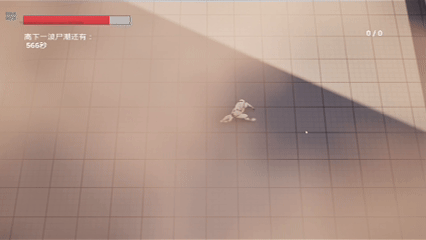
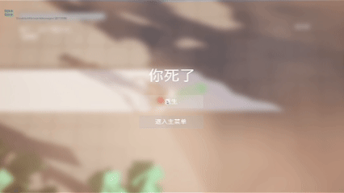
二、核心机制
2.1 俯视角设计
2.1.1 设计目的
《幸存》采用俯视角作为主视角，基于以下四点考虑：
建造的空间参照：建造是本作核心玩法之一，俯视角为建筑放置提供清晰的整体布局——这是建造类玩法经《环世界》《异星工厂》等作品长期验证的视角选择。
积累的可见性：建筑群是跨局成长的唯一载体，俯视角让玩家随时纵览基地的全貌与扩张过程，强化“这一局的地板由上一局铺成”的核心体验。
威胁的可读性：威胁可来自任意方向，俯视角保证视野内的威胁全部可见——玩家的压力来自威胁的密度与决策的取舍，而非视野盲区的偷袭，死亡始终可归因。
保留探索空间：俯视角不等于全知视角——视野以玩家为圆心有限展开，地图全局信息仍不可见，鼓励玩家主动探索并记忆资源富集点。
2.1.2 功能呈现
《幸存》以俯视角为基底，移动与瞄准的流畅度是战斗体验的根基。为此，本作将移动与瞄准解耦：角色移动由键盘控制，角色朝向与射击方向则始终跟随鼠标指针，二者互不牵制。
这一方案意味着玩家可以在走位、撤退的同时向任意方向开火——面对自四面八方逼近的僵尸群，“边跑边打”不是舒适性问题，而是生存手段本身。它也是俯视角射击品类的成熟操作方案，玩家无需学习成本。
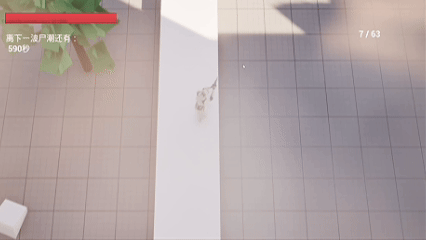
2.1.3 实现原理
《幸存》的俯视角基于 3D 场景实现：摄像机通过 Spring Arm（弹簧臂）组件挂接于玩家角色，弹簧臂俯仰角设为 75°，形成接近垂直俯视的高角度视角。
采用 75° 而非 90° 纯俯视，是为了保留一定的垂直面信息——建筑立面、地形起伏与角色朝向在画面中保持可读。这一选择与后续规划直接相关：在制作具有明显高低差的地形时，纯俯视角将无法呈现坡度与层叠关系，75° 的高角度则天然携带纵深线索。
摄像机与角色的距离不由固定值写死，而由弹簧臂长度弹性控制：弹簧臂的碰撞探测可在地形或建筑遮挡时自动收缩臂长，避免镜头穿模；后续开发中，臂长亦可作为镜头节奏的工具——建造规划时拉远以纵览基地，遭遇战时收紧以聚焦威胁，与第 3 章的体验节奏设计配合。
对于玩家方向，则采用收集指针下的世界坐标→计算命中点与玩家位置的差值得到指向向量→朝向向量控制玩家角色的旋转。
2.2 虚化遮挡机制
2.2.1 功能呈现
在玩家经过玩家与摄像头之间的地形、物体时，将会虚化此物体，让玩家暴露在镜头内，不会造成遮挡让玩家的体验受限。虽在demo的地图设计中有两处特意的遮挡地形，但高价值区域的房屋屋顶做了全面虚化功能。
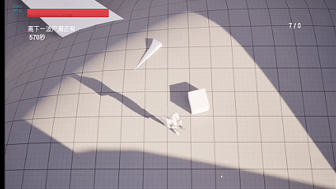
2.2.2 实现原理
利用不透明蒙版（Opacity mask）实现的透视/挖洞材质。
当遮挡物品离相机足够近，其屏幕中心一圈会被挖成透明，让玩家不被头顶的遮挡物遮住，离开屏幕中心或距离过远，遮挡物恢复实心。
2.3 移动系统
2.3.1 功能呈现
角色移动由 W/A/S/D 驱动，沿世界坐标轴向位移，与角色朝向无关——这是 2.2 节移动/瞄准解耦的配套设计：角色面向鼠标，移动方向由按键在世界轴上独立决定，玩家得以在朝任意方向瞄准的同时自由走位。斜向移动速度已做归一化，避免对角线移动快于正向。
按住疾跑键进入奔跑状态，最大移动速度提升。
由于移动方向与朝向解耦，角色需以任意相对角度移动：动画采用八向混合（Blendspace），覆盖前进、侧移、倒退及其斜向组合，保证持枪平移时脚步方向与躯干朝向正确——这是解耦方案在表现层的必要配套。
期间，若玩家拿起手枪或步枪，将会切换不同的动画，玩家的姿势、移动、奔跑等动画都会不同，加强玩家的沉浸感。
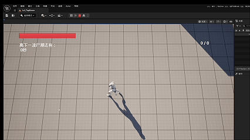
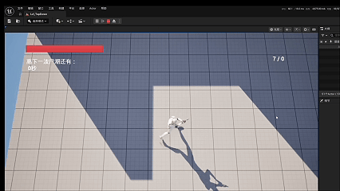
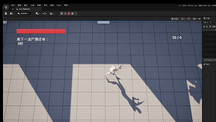
2.3.2 实现原理
不同武器姿势切换：
当玩家按住疾跑键时，将会提升玩家的最大速度，让玩家从走路切换至奔跑。
通过blend poses by int蓝图节点，通过接收玩家当前WeaponType变量，选择呈现blend pose0、blendpose1、blendpose2。
八向移动：
核心：Animation Blueprint 里的「混合空间 + 分层混合(Layered Blend per Bone)」
UE 的动画蓝图能按骨骼分层混合，把身体拆成“上半身一套动画、下半身另一套动画”，互不干扰。
原理
下半身：由移动状态机驱动。站立/跑动/待机这些移动动画，根据角色速度切换，永远在播。
上半身：由"射击/换弹/持枪"这些动作驱动。开火时播上半身射击动画，换弹时播上半身换弹动画。
分层混合节点(Layered Blend per Bone) 把两者叠起来：
设定一个"分界骨骼"。
分界以下 → 完全用下半身(移动)动画。
分界以上 → 用上半身(射击/换弹)动画，按权重混合。
结果：腿在跑动动画里，手在做换弹动画，二者同时、不打架。
2.4 射击系统
2.4.1 功能呈现
射击是《幸存》分钟级循环中执行频率最高的动词——玩家在每一局内的大部分时间，体验的就是“瞄准—开火—命中反馈”这个动作本身，射击手感因此构成本作体验与心流（见第 3 章）的地基。
基于上述目标，本系统实现如下功能：
玩家可以按住鼠标右键、瞄准键来进行视角的扩展，让玩家可以看到屏幕外的画面与信息。当玩家拿起更高级枪械时，瞄准数值更高，能够看得更远。
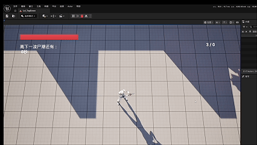
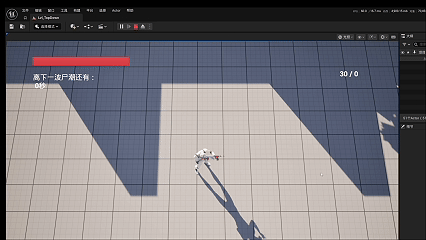
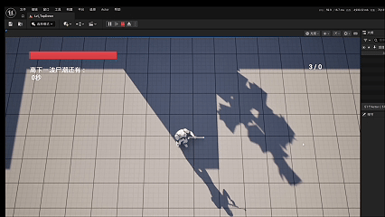
玩家拿起枪械时，可以通过鼠标左键进行射击，子弹会精准、平行地攻击到鼠标指针的位置。
当玩家子弹打空但玩家仍然射击时，会触发空弹、播放空弹声效与动画，并不会发射出子弹。
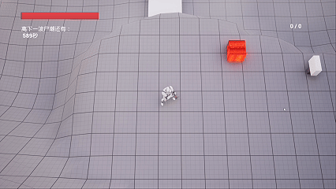
枪械共有三种：手枪、步枪、狙击枪。每个枪械的属性不同、弹匣数和备弹数不同、效果不同、资源消耗数不同。例如：
手枪伤害较高弹匣数较少，更适合清杂和前期的过渡；
步枪伤害稍低、弹匣数充足且为全自动，适合火力覆盖，为中期的主要的输出手段，但子弹消耗速度过快，对资源消耗较高；
狙击枪伤害极高同时弹匣数极少，能够一击毙命，主要用于后期击败尸潮的巨人僵尸。
2.4.2 实现原理
2.4.2.1 系统架构总览
整个射击系统遵循数据驱动 + 状态分离原则，分四层：
关键设计：枪不是Actor，是"一行数据"。
玩家身上是固定组件(WeaponMesh + MagazineMesh)，切枪=换组件上的模型+换当前数据行。所有差异化由数据表字段驱动，逻辑只写一份。
2.4.2.2 数据层
字段契约：
| 字段 | 类型 | 作用 |
|---|---|---|
| WeaponName | String | 名称 |
| bIsMelee | bool | 是否近战(拳头占位) |
| Damage | float | 单发伤害 |
| MagazineSize | int | 弹匣容量 |
| WeaponMesh | StaticMesh | 枪身模型 |
| MagazineMesh | StaticMesh | 弹夹模型 |
| EquipMontage/FireMontage/ReloadMontage/DryFireMontage | AnimMontage | 四类动画 |
| bIsAutomatic | bool | 是否全自动 |
| WeaponAnimType | int | 持枪姿势索引 |
| AimRange | float | 瞄准倍率/可视距离参数 |
| AmmoType | E_ResourceType | 消耗的弹药资源类型 |
点击图片可查看完整电子表格
三把枪差异化对照
| 枪 | 伤害 | 弹匣数 | 是否全自动 | 弹药种类 | 瞄准数值 | 定位 |
|---|---|---|---|---|---|---|
| 手枪 | 30 | 7 | False | 手枪弹药 | 300 | 前中期清杂、保底 |
| 步枪 | 25 | 30 | True | 步枪弹药 | 450 | 中期火力覆盖，资源消耗高 |
| 狙击 | 500 | 3 | False | 狙击弹药 | 1000 | 后期一击毙命，克制巨人 |
点击图片可查看完整电子表格
原理：同一份开火逻辑，只因为读到的数据行不同，就表现出完全不同的手感。这是数据驱动的核心价值——加新枪 = 加一行数据，不改代码。
2.4.2.3 射击核心流程
原理：从"鼠标屏幕坐标"反推一条世界射线，子弹沿"枪口 → 命中点"方向飞行
按下左键 → Fire()
"精准"：子弹方向由“枪口 → 鼠标命中点”决定，所以弹道始终穿过准星/指针指向的位置。
"平行"：子弹生成后沿该方向直线飞行(带初速度或直线 Trace)，不散射，不抛物线。
伤害在子弹上：子弹碰撞目标时，用自己身上的 fDamage 对目标 ApplyDamage。所以"伤害"是开火时从数据行抄进子弹的。
2.4.2.4 瞄准 / 视野扩展原理
两层：状态+数据
状态层(驱动行为)：
IA_Aim Started → Set bAiming = true
IA_Aim Completed → Set bAiming = false
数据层(驱动数值)：
切枪时 → Set AimRange = 数据行AimRange
AimRange 是"这枪能看多远/瞄多准"的参数。手枪小、步枪中、狙击最大。
总结：
状态负责"是否进入瞄准"，数据负责"瞄准能看多远"。所以拿起狙击枪，AimRange更高，视野扩展更远。
2.4.2.5 空弹机制
原理：开火前先判弹药，空弹走"反馈分支"，不发射
Fire()
空弹是一次完整的"演出"：有动画 + 音效，给玩家明确反馈，但不产生任何战斗效果。
空弹不消耗弹药、不生成子弹、不进入攻击冷却的实质伤害部分。
判空是开火流程的第一道闸门，在扣弹和生成子弹之前。
2.4.2.6 换弹与资源消耗
原理：弹药是"资源"，换弹 = 用资源兑换弹匣
IA_Reload → Reload()
AmmoType 从数据行读，所以手枪/步枪/狙击各扣各的弹药资源。
换弹是一次性补满(自动跑完缺口数)，不是手动一发发点。
换弹期间用 bReloading 与开火互斥，防止边换弹边开枪。
2.5 拾取、交互系统
2.5.1 功能呈现
拾取与交互系统包括玩家与地面上的容器交互，获取资源，以及拿起地上的武器。主要功能如下：
接近容器、枪械、以及制作的可交互建筑时，将会在交互物体附近弹出提示“按E交互”。
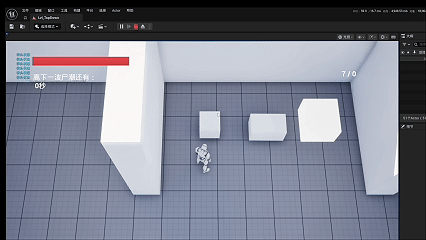
与容器、地上的枪械以及可交互建筑交互时，会获得随机资源（容器系统之后详述）、装备当前枪械、获取建筑产生的资源（木、石、钢以及血量，具体在后续建筑系统详述）。
可以丢弃当前枪械。
2.5.2 实现原理
2.5.2.1 系统架构总览
整个拾取/交互系统遵循接口驱动 + 状态指针原则，分三层：
关键设计：玩家不判断"眼前是什么"。
玩家只持有一个接口引用 NearbyPickup 和两个数据状态(EquippedWeapons 行名数组、CurrentWeaponIndex)。
按 E 只做"转发"，具体行为由物体自己决定。新增任何可交互物 = 实现同一个接口，玩家侧零改动。
2.5.2.2 靠近提示（功能点 1）
原理：碰撞重叠 → 写入指针 → 显示物体自带的 Widget
此处以可拾取手枪BP_Weaponpick示例：
提示 Widget 挂在物体自己身上(Widget)，不是玩家 HUD，靠近才显示。
指针靠近写入、离开清空，保证交互目标唯一且有效。
Cast 保证只有玩家触发，僵尸等其他 Actor 不响应。
2.5.2.3 武器拾取（功能点2之装备枪械）
武器拾取是三段串联：Interact → TryAddWeapon → EquipCurrentWeapon。
(1) 拾取物响应 Interact
原理：拾取物只把自己的 WeaponRowName 交给玩家入包逻辑，成功即自毁。真正的枪不在拾取物上，拾取物只提供"行名"。
(2) TryAddWeapon —— 入包
原理：背包是行名数组，不是枪对象。装备的实质 = 把数据行的行名写进数组。入包即切枪、即装满弹匣。
(3) EquipCurrentWeapon —— 装载
EquipCurrentWeapon()：
↑装载主要原理：根据当前Index切换Mesh模型以及属性。
↓切枪主要原理：切换当前Index
原理：切枪 = 换两个 Mesh 组件的模型 + 刷新战斗参数，枪是数据行而非 Actor。所有切枪路径收敛到这个幂等装载入口。
(4) 武器拾取与切枪的装载关系
捡枪：按 E → Interact 接口转发（拾取物 Actor 提供其数据表行名 RowName）→ TryAddWeapon → EquipCurrentWeapon
切枪：切枪键 → 修改 CurrentWeaponIndex → EquipCurrentWeapon
TryAddWeapon 负责状态变更：背包写入该武器、CurrentWeaponIndex 指向它。拾取新枪立即装备。
EquipCurrentWeapon 负责状态呈现：读取索引指向的数据行，将其投影到玩家——属性、动画集。
两条路径共用同一装载入口：任何武器进入“当前装备”状态都必须经过 EquipCurrentWeapon，拾取与切枪的行为因此永远一致；新增武器类型时，两条路径零额外逻辑。
2.5.2.4 容器交互(功能点 2 之获得随机资源)
BP_Container.Interact：
随机抽取资源种类与数量
→ AddResource(类型， 数量)
→ 开箱表现 → 标记已开 → 销毁/失效
原理：容器收到 Interact，自己完成随机抽取，再通过玩家的 AddResource 发放。随机逻辑归容器系统，此处只负责"收到交互 → 发资源"。
2.5.2.5 资源建筑 / 回血站交互(功能点 2 之收取建筑产出)
资源建筑.Interact：
护士站.Interact：
原理：建筑在 Tick 里累积 StoredAmount，交互时一次性发放并清零。资源建筑发的是"资源类型"，护士站发的是"治疗量"，二者共用同一套"累积—收取"范式，只是发放目标函数不同。
2.5.2.6 丢弃枪械(功能点 3)
IA_Drop → DropWeapon()：
原理：丢弃是拾取的逆过程——背包移除行名，世界再生成一个同行的拾取物，然后重新装载到剩余武器。
先删数据、再生成物体，避免状态不一致。
丢出的拾取物 WeaponRowName 与原来一致，保证"丢枪可回收"。
丢完自动重新 Equip，切到剩余那把或回拳头。
三个状态(EquippedWeapons、CurrentWeaponIndex、WeaponRowName)是拾取/丢弃往返的唯一纽带。
2.5.2.7 数据流总览
2.6 建筑系统
2.6.1 设计目的
建筑系统是《幸存》roguelite 循环的局外支点：单局内采集的资源可以沉淀为局外永久建筑，让每一次重开都不是回到原点，而是带着增量积累的再出发。这也是本作与同类俯视角射击游戏的核心差异——它们的重开是惩罚，本作的重开是进度。
在反复开局、收集、建造的循环中，玩家将逐渐感到自己正在驯服这款游戏：上一局造成威胁的敌人，这一局有了应对手段；上一局够不到的关卡，这一局有了突破口。建造系统要建立的正是这种“征服游戏”的反馈——玩家能明确感知到，局面变轻松不是因为难度下降，而是因为自己逐局变强。
2.6.2 功能呈现
建筑系统的逻辑主要为：使用建筑键唤起建筑系统UI，然后通过按键选取上一个、下一个建筑，当玩家资源足够时，便能够建造选取的建筑并扣除资源。
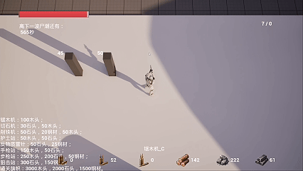
对于建筑系统，具有以下建筑类型：
资源型建筑：资源型建筑可以不断生产资源，以获得更多可持续资源、减少玩家专门收集资源的时间，到游戏后期，可以制作大量资源型建筑以便建造更多强力建筑。
治疗型建筑：治疗型建筑可以不断生产血量，以便治疗玩家的状态，治疗型建筑具有治疗资源上限。
陷阱型建筑：陷阱型建筑可以在固定范围持续攻击僵尸，能够抵御僵尸的进攻。
装备型建筑：装备型建筑不仅在制作之初就能提供更强大的枪械，同时还能够持续产出对应枪械的弹药。
2.6.3 实现原理
2.6.3.1 系统架构总览
整个建筑系统遵循状态开关 + 建筑自治原则，分三层：
2.6.3.2 建造模式切换
原理：建造是一个独立的输入模式，由一个模式开关（bIsBuilding）和一个循环选择游标（BuildingIndex）驱动。
状态变量：
| 变量 | 类型 | 作用 |
|---|---|---|
| bIsBuilding | bool | 是否处于建造选择态 |
| BuildingList | Class 数组 | 可选建筑列表(顺序 = 索引) |
| BuildingIndex | int | 当前选中的建筑索引 |
点击图片可查看完整电子表格
选择游标：
建筑清单是固定顺序的类数组，BuildingIndex 指向当前选中项，Z/C 循环移动游标（越界回绕），仅驱动选中，不改变输入映射与 UI 结构。
确认建造：
F → 由 BuildingIndex 确定建筑类 → 校验并扣除资源 → Spawn 生成建筑。
UI 的开关只翻转 bIsBuilding 并显示/隐藏建造选择界面。
建筑清单是类数组，索引即建筑，顺序固定、循环切换。
2.6.3.3 资源校验
原理：首先判断是否满足资源数量条件，若满足再进行生成
F 确认：
① 由 BuildingIndex 判定该建筑消耗的资源类型与数量
② Branch(Resource类型， 数量)
false → 不生成
true → 生成建筑(见 2.6.3.4)
2.6.3.4 生成位置与扣除
原理：建筑生成在玩家前方，朝向玩家
生成位置 = 玩家位置 + 玩家前方向 × 距离偏移
生成成功后，减少玩家资源
2.6.3.5 资源型建筑（功能点1）
原理：Tick 累积 + 交互收取，复用拾取系统的"累积—收取"范式
变量：
| 变量 | 类型 | 作用 |
|---|---|---|
| StoredAmount | int | 已累积资源量 |
| AmountPerTick | int | 每次累加量 |
| Interval | float | 累加间隔(秒) |
点击图片可查看完整电子表格
Tick 累积：
交互收取：
见2.5.2.5
三种资源建筑(锯木机/切石机/削铁机)共用同一套逻辑，只差资源类型。
产出随时间自动累积，玩家按 E 一次性取走并清零，减少反复采集时间。
2.6.3.6 治疗型建筑（功能点2）
原理：与资源建筑同构，只多一个上限
变量(额外)：
| 变量 | 类型 | 作用 |
|---|---|---|
| MaxStoredAmount | int | 治疗量上限 |
点击图片可查看完整电子表格
Tick 累积（带封顶）：
交互回血：
见2.5.2.5
2.6.3.7 陷阱型建筑（功能点3）
原理：范围重叠 + 持续伤害，建筑自身作为"自动攻击器"
陷阱建筑拥有一个攻击范围碰撞体(Sphere/Box)
陷阱不主动索敌，靠重叠判断"僵尸进没进范围"。
持续伤害由 Tick 节流(攻击间隔)，对范围内所有僵尸反复结算。
用于在尸潮中自动清杂、守住基地缺口。
2.6.3.8 装备型建筑（功能点4）
原理：建造时一次性召唤武器 + 持续产出对应弹药
（1）建造时召唤武器
手枪站 → 获得子弹资源；步枪站→ 召唤步枪；狙击站 → 召唤狙击。
三栋建筑只在"召唤哪把枪"上不同，其余逻辑一致。
（2）持续产出弹药
原理：复用资源建筑的"累积—收取"范式，只是产出物是弹药
Tick 累积 StoredAmount(弹药量) → 交互时 AddResource(对应弹药类型， StoredAmount) → 清零
装备型建筑 = 资源型建筑 + 一次性武器召唤，两者叠加。
弹药类型与召唤的枪对应(手枪站产手枪弹药，步枪站产步枪弹药，狙击站产狙击弹药)。
2.6.3.9 资产经济系统表
| 建筑名称 | 生产数量/次 | 生产间隔/秒 | 生产类型 |
|---|---|---|---|
| 锯木机 | 5 | 5 | 资源型 |
| 切石机 | 5 | 10 | 资源型 |
| 削铁机 | 5 | 20 | 资源型 |
| 护士站 | 1 | 1 | 治疗型 |
| 手枪站 | 1 | 5 | 装备型 |
| 步枪站 | 1 | 2 | 装备型 |
| 狙击站 | 1 | 10 | 装备型 |
点击图片可查看完整电子表格
2.6.3.10 与死亡重开的边界
原理：建筑由玩家直接生成，重置逻辑为销毁并重置SpawnManager逻辑来模拟“重开”游戏，故重置逻辑天然不触碰它
资源点/僵尸/容器归各SpawnManager，死亡重开时被清空重刷。
建筑由玩家直接Spawn，是"不重置"的 Actor，构成跨局永久资产。
这是建筑系统成为 rogue 玩法潜力的关键：重开后基地仍在，玩家带着更强的家重来。
2.6.3.11 数据流总览
2.7 容器/资源系统
2.7.1 功能呈现
容器分为三种：普通、中等、高级。
其中，与容器交互后，所获得的资源随机，并根据容器的类型获得不同的资源类型。
| 容器 | 木材 | 石材 | 钢材 | 手枪子弹 | 步枪子弹 | 狙击子弹 |
|---|---|---|---|---|---|---|
| 普通容器 | 5~10 | 5~8 | - | 3~8 | - | - |
| 中等容器 | 5~10 | 10~15 | - | - | 5~12 | - |
| 高级容器 | - | - | 5~10 | - | 15~25 | 1~2 |
点击图片可查看完整电子表格
其中，容器对于获取材料的比重不同，比如普通容器中，木材的比重为5，手枪子弹为2，所以交互容器更可能获得木材的资源。
资源则分为六种，分别为木材、石材、钢材、手枪子弹、步枪子弹、狙击子弹。
其中，木材、石材、钢材的获取为：
用拳头击打生成在地图上的木头、石头、钢材。
击杀僵尸获得少许。
打开对应容器获得。
人造建筑获得。
手枪子弹、步枪子弹、狙击除无法从击杀僵尸获得外，其余原理相同。
2.7.2 实现原理
2.7.2.1 系统架构总览
整个容器/资源系统遵循枚举统一 + 权重抽取 + 四路供给原则，分三层：
关键设计：资源用枚举 + 映射统一建模。
六种资源抽象成枚举 E_ResourceType，玩家只维护一个 Resources 映射(枚举 → int)。所有供给方(容器、资源点、僵尸、建筑)最终都通过 AddResource(类型，数量) 记账，互不关心对方来源。这是资源系统可扩展的核心。
2.7.2.2 资源数据层
资源枚举： E_ResourceType：
木材 / 石材 / 钢材 / 手枪子弹 / 步枪子弹 / 狙击子弹
玩家存储： Resources
记账接口：
原理：资源是“键值对”而非六个独立变量。加一种资源 = 枚举加一项，记账逻辑零改动。RemoveResource 的 bSuccess 返回值，是“建造扣费”“换弹扣费”等一切资源判定的统一闸门。
2.7.2.3 容器的权重随机抽取（核心）
原理：先按权重选"出哪种资源"，再在该资源区间内随机数量
容器交互不是"六种资源各抽一遍"，而是每次按权重挑出一种或少数几种发放，比重高的更容易被抽中。
(1) 权重抽取
总权重 = 各资源权重之和
随机数 R = Random(0,总权重)
从 0 累加各资源权重，落到哪一档就选中哪种资源
例(普通容器)：木材权重 5，石头权重3，手枪子弹权重 2，总权重 10。
R 落在 [0，5) → 木材
R 落在 [5，8) → 石头
R 落在 [8，10) →手枪子弹
→ 木材概率 5/10，石材概率3/10，手枪子弹 2/10，木材更易得。
(2) 数量区间
选中资源后，在该资源的数量区间内随机：
数量 = RandomIntegerInRange(下限， 上限)
(3) 发放
AddResource(抽中的类型， 抽中的数量)
见2.7.2.2
2.7.2.4 三种容器差异化
原理：容器类型 = 一组"权重 + 区间"配置，逻辑只写一份
三种容器同用 2.7.2.3的数据表 ，：
| 容器 | 木材 | 石材 | 钢材 | 手枪弹 | 步枪弹 | 狙击弹 |
|---|---|---|---|---|---|---|
| 普通 | 5 | 3 | — | 2(权重低) | — | — |
| 中等 | 3 | 4(权重高) | — | — | 2 | — |
| 高级 | — | — | 6 | — | 4 | 1(权重低) |
点击图片可查看完整电子表格
普通容器：木材权重 5、石材3、手枪弹 2 → 木材更易得。
中等容器：石材为主，偶尔为步枪子弹和木材，偏向中期过渡。
高级容器：钢材为主 + 步枪，狙击弹较为稀有。
实现上：每种容器权重与资源获取区间存在相同的数据表之中，抽取函数统一，差异只体现在参数。
2.7.2.5 资源点获取（拳头）
原理：可破坏 Actor + AnyDamage 结算
三种资源点共用一套"受击—扣血—死亡掉落"逻辑，只差资源类型。
用拳头击打 = 对资源点 ApplyDamage，伤害由近战系统提供。
掉落数量在死亡时随机一次，落到玩家资源 Map 里。
僵尸死亡获取同理，不过数量、类型随机。
2.7.2.6 数据流总览
2.8 随机生成系统/僵尸系统
2.8.1 设计目的
地图资源点与容器的随机生成，当前版本承担的职责是防背板：每一局点位分布不同，玩家无法将上一局的路线记忆带入下一局，重开的世界不会被迅速“解完”。若世界固定，几局之后最优路线唯一化，重开的边际收益归零——那是传统生存游戏的世界，撑不起 rogue 的重开循环。
同时，随机分布带来资源获取节奏的波动，偶尔的高价值意外之喜为每局提供小幅情绪起伏。
后续方向：将随机性从“防背板”升级为“路线决策”——使每局的开局路线取舍成为核心决策，与建筑系统的局外成长（见 2.6）形成双引擎。此项未纳入当前版本，因其超出本 Demo 的验证范围。
2.8.2 功能呈现
对于随机生成系统：
地图中某些区域将会划分为木头区、石头区、钢区，在这些区域中，将会随机生成资源点，偶尔一局木头区生成较多、偶尔一局木头区会生成较少，各个区域同属一个逻辑，但范围不同、位置不同、属性不同。其中钢区不仅在特定聚集区集中生成，它也会在全图含有范围，若你运气好，也许能在这一局的低级地区找到钢。
地图分为低级、中级、高级板块，其中，普通容器在所有板块都有生成，是生成最多的容器类型，中级容器只在中级与高级板块生成，高级只在高级板块的个别区域刷新。高级容器偶尔会不生成。
对于僵尸系统：
僵尸分为三种种类：普通型、快速型、巨型。其中快速型和巨型为普通僵尸的子蓝图，数值主要以共同变量差分。
其中，
普通型：血量适中，伤害适中，速度适中，是最没有威胁、最普遍的类型。
快速型僵尸：速度较快，但伤害、血量都较低，同时搜索范围也是最广的，近乎能在半个地图追踪玩家。
巨型僵尸：仅在高级区固定刷新（直接蓝图放置在场景），以及尸潮时刷出。巨型僵尸血量极高、伤害极高，但速度与追踪范围都较低。
僵尸分为普通刷新和尸潮刷新，其中，普通刷新会在地图随机范围中刷出，并且按照比例生成快速僵尸，巨型僵尸不主动刷新。尸潮刷新的僵尸为固定数量的快速、普通、巨型僵尸，并会全图范围追逐玩家。尸潮每10分钟刷新一次，消灭全部尸潮僵尸会开始重新计时；在尸潮期间，不会自动刷新僵尸。
普通刷新↑
尸潮刷新↓
每个僵尸在看到玩家时都会进行追踪，直到玩家跑远，其中快速僵尸视野范围极大。
2.8.3 实现原理
2.8.3.1 系统架构总览
随机生成与僵尸系统遵循区域分区 + 独立 Manager + 状态机原则，分三层：
关键设计：每个生成区一个独立 Manager，无父子关系。
各 Manager 只维护自己的 SpawnedActors 数组与区域 Box，负责"在哪刷、刷多少、怎么重置"。逻辑同构、参数不同，天然支持"木头区、石头区、钢区、低中高容器板块、僵尸区"的差异化，且死亡重开时逐 Manager 重置，建筑不受影响。
2.8.3.2 资源点随机生成（功能点1）
原理：区域 Box 内随机取点 + 落地对齐，每个区域一个 Manager
（1）区域定义
每个资源 Manager 带一个 Box 碰撞体(NoCollision，仅作范围标记)：
| 区域 | Manager | 刷的资源 | 数量范围 |
|---|---|---|---|
| 木头区 | 木头 Manager | BP_Wood | 10~20 |
| 石头区 | 石头 Manager | BP_Stone | 5~15 |
| 钢区 | 钢 Manager | BP_Steel | 2~4 |
点击图片可查看完整电子表格
（2）单点生成流程
随机在 Box 内：RandomPointInBoundingBox 每次循环重算，点分布在整个区域内。
落地对齐：向下射线找地形表面，避免资源悬空。
每局数量随机：Count 用随机整数，木头区这局多、下局少，构成 rogue 体验。
（3）钢区特殊规则
钢区 = 固定聚集区 + 全图低概率散落。
固定聚集区：一个钢区 Manager，负责集中刷钢。
全图散落：额外在全图范围放置一个钢区Manager，分散刷少量钢。
2.8.3.3 容器分板块生成(功能点2)
原理：容器等级与地图板块绑定，不同等级在不同板块的刷新概率不同
地图分低级/中级/高级三个板块，每个板块一个(或多个)容器 Manager，各带自己的区域 Box。
具体流程、原理与2.8.3.2资源点随机生成类似，故不赘述。
2.8.3.4 僵尸三种类（功能点3）
原理：一个父蓝图 + 子蓝图数值差分
BP_Zombie(父，写全部 AI 逻辑)
─ BP_Zombie_Normal(普通)
─ BP_Zombie_Speed(快速)
─ BP_Zombie_Giant(巨型)
共同变量(父蓝图定义，子蓝图填默认值)：
| 变量 | 普通 | 快速 | 巨型 |
|---|---|---|---|
| MaxHealth | 300 | 150 | 500 |
| ZombieDamage | 25 | 15 | 50 |
| MoveSpeed | 300 | 450 | 150 |
| AggroRange | 中 | 极大 | 低 |
点击图片可查看完整电子表格
逻辑只写一份在父蓝图，子蓝图仅改数值。
快速型搜索范围最大，近似半图追踪，正对应其 AggroRange 设得极大。
2.8.3.5 僵尸AI状态机
原理：PawnSensing视觉感知 + 三态流转，伤害跟随动画关键帧。
僵尸 AI 用 PawnSensing 组件做视觉感知，由"看见/没看见"驱动状态切换。三个状态通过 AI Move To 与动画回调串起来：
（1）感知层：PawnSensing
僵尸挂一个 PawnSensing 组件，负责"看见玩家"的检测。
PawnSensing OnSeePawn(Pawn)
→ 调 Chase Target(Pawn)
OnSeePawn 是 PawnSensing 的内置事件，当玩家进入僵尸的视觉范围/视野时触发，输出被看见的 Pawn。
快速僵尸视野范围最大，直接由子蓝图的 PawnSensing 参数(视觉半径)差分，而非改逻辑。
看见即追击，无需手写距离判断。
（2）追击Chase Target
原理：看见玩家 → 记录目标 → AI Move To 寻路追过去
Chase Target 是自定义事件，入口参数 TargetActor = 被看见的玩家。
AI Move To 用 TargetActor 版本，寻路绕障碍，追到即触发OnSuccess。
追到后由 Attack 布尔门控是否进入攻击动画。
（3）攻击：动画+AnimNotify结算
原理：伤害不直接发，而是"动画播到关键帧 → 球体追踪 → 命中才扣血"
Attack 布尔 = 攻击开关，追到玩家时为 true，动画结束/中断时复位 false。
伤害结算在 OnNotifyBegin：动画播到挥击关键帧(Notify)才做球体追踪，保证"挥到那一下才打"，而非贴脸瞬发。
球体追踪：从僵尸朝前 200 单位、半径 20 的球体，只检测对象类型，命中即 ApplyDamage。
伤害值来自变量 ZombieDamage。
（4）巡逻：Patrol
原理：随机可达点循环移动，构成未发现玩家时的游荡行为
随机点：用导航系统 GetRandomReachablePointInRadius 在自身 2000 范围内取可到达点，保证落在 NavMesh 上。
递归循环：到达后 Delay 0.8 秒再调自己，形成"走到点 → 停一下 → 换点"的持续游荡。
失败兜底：AI Move To 失败也回到 Patrol，不会卡死。
（5）状态流转总结
| 状态 | 触发 | 行为 | 退出 |
|---|---|---|---|
| 巡逻 | 未发现玩家 | 随机点循环移动 | OnSeePawn 看见玩家 |
| 追击 | OnSeePawn | AI Move To 追玩家 | 追到 → 攻击 / 未追到继续 |
| 攻击 | 追到玩家 + Attack=true | 播动画 → Notify 追踪伤害 | 动画结束/中断 |
点击图片可查看完整电子表格
2.8.3.6 普通刷新与尸潮刷新(功能点 2)
原理：两个独立定时器 + 一个尸潮状态开关
（1）普通刷新（时间制，远处刷）
数普通+快速 < 上限 MaxNormalZombies 才继续
RandomInteger(0,9) > 1 True→ 普通，否则快速
落点 = 玩家位置 + 随机方向 × 距离(玩家远处)
落地射线 → Spawn
9：1 比例：随机整数 0~9，<=1 才刷快速，即 20% 快速。
远处刷：以玩家为圆心、远处半径取随机点，不会刷在玩家脸上。
巨型僵尸不参与普通刷新(手动放置 + 尸潮)。
（2）尸潮刷新（定时+全图追踪）
尸潮倒计时(每 10 分钟)：
倒计时归零 → StartHorde：
尸潮僵尸单独计数，与普通刷新互斥。
2.8.3.7 巨型僵尸的特殊处理
原理：手动放置 + 死亡后原位复活
巨型僵尸直接放置在场景高级区，不靠 Manager 刷(除尸潮)。
因其"固定常驻 Boss"定位，普通刷新不会产生它。
死亡后复位：重开时销毁所有僵尸后，在巨型原位置(写死坐标)重新 Spawn 一只，保证"高级区永远有巨型"。
2.8.3.8 数据流总览
2.9 死亡与重开系统
2.9.1 设计目的
死亡与重开系统划定的，是 rogue 循环的损失边界：哪些东西随死亡归零，哪些东西跨局沉淀。
若死亡 = 全盘清零，玩家辛苦建造的基地付之东流，挫败感将摧毁反复游玩的动力；
若死亡 = 全部保留，一局顺局即可滚起雪球，重开失去意义，rogue 循环不成立；
本作的取舍：建筑永久保留，局内资源清零。
由此，每一局的资源收集成为押上桌的筹码，追逐与生存战的紧张由此而来；而建造是把易失筹码固化为永久资产的储蓄动作。死亡不再是惩罚，而是结算——重开是带着增量的再出发。
2.9.2 功能呈现
玩家血量归零时，弹出死亡 UI，提供「重新开始」与「前往主菜单」两个选项。
选择「重新开始」后，不重开地图：
玩家满血、清空资源、武器复位、回到出生点。
场上所有僵尸被清除，巨型僵尸于原位复活。
资源点、容器重新生成，尸潮倒计时与状态复位。
玩家建造的所有建筑原地保留，不参与任何重置。
2.9.3 实现原理
2.9.3.1 系统架构总览
重开并不是重新打开地图 Level，而是让所有容器、僵尸、资源点重新刷新、计时、重置资源、送回传送点
死亡与重开遵循建筑豁免 + 逐 Manager 重置原则，分三层：
建筑是由玩家自行生成的Actor，故重置逻辑天然不触碰它。
资源点、容器、僵尸都登记在各自 Manager 的 SpawnedManager 里，重开时被清空重刷；建筑由玩家直接 Spawn，不在任何数组内，是唯一跨局存活的资产。
2.9.3.2 死亡判定
玩家血量归零 → 玩家控制器显示死亡 UI。
死亡不立即执行重置，而是等待玩家在 UI 上的选择。
2.9.3.3 重新开始（核心）
原理：不重开地图，而是"逐 Manager 重置 + 玩家复位"，建筑因不在任何重置数组内而保留。
死亡 UI「重新开始」按钮执行：
玩家 BP_Player Respawn：
僵尸 Manager ResetZombies：
各资源/容器 Manager Reset：
与僵尸逻辑类似、故不赘述
尸潮倒计时、状态复位
隐藏死亡 UI + 恢复输入
各 Manager 的 Reset 统一契约：
Reset()：
ForEachLoop(自己的 SpawnedActors) →
DestroyActorClear(自己的 SpawnedActors)
重新调用自己的初始生成逻辑
木头/石头/钢/容器 Manager 各自只清自己数组里的东西。
僵尸 Manager 特殊：用 Get All Actors of Class 清三种僵尸(含场景手动放置的巨人)，再在原生成坐标生成巨人。
2.9.3.4 建筑豁免（关键）
资源点/容器/僵尸 → 在各自 Manager 的 SpawnedActors 里 → 被重置
建筑 → 玩家直接 Spawn，不在任何 Manager 数组 → 不重置
重开后玩家站在原地、资源清零、僵尸重刷，但基地建筑群仍在其原位，构成"带着更强的家重来"的体验。
2.9.3.5数据流总览
2.10 关键异常处理
建造系统
1. 资源不足却能建造
Bug：资源不够，按 F 还是把建筑建出来了。
解决：扣资源放在生成之前，用 RemoveResource 的返回值判断，不够就直接停，不生成。
2. 资源扣了建筑没出来
Bug：资源没了，建筑也没出现。
解决：同上，把“扣资源”和“生成建筑”串成一条链，扣成功紧接着生成，中间不断。
3. 建筑飘在半空或陷进地里
Bug：按 F 建出来，建筑浮着或半截埋地下。
解决：生成位置用“玩家位置 + 前方偏移”，高度按落地情况调一下偏移量。
4. 切换建筑时索引越界
Bug：切到最后一个再按 C，或者第一个再按 Z，直接崩了。
解决：索引循环处理，减到 0 以下回末尾，加过头回 0。
5. 陷阱建筑不打怪 / 一直掉血
Bug：僵尸进范围没反应，或者进了就一直扣血。
解决：靠"僵尸是否在范围"标记，加个攻击间隔，别每帧都结算伤害。
重开系统
1. 重开后建筑全没了(最关键)
Bug：点重新开始，基地整个消失。
解决：重开并不是重新打开地图Level，而是让所有容器、所有僵尸、所有资源点重新刷新、计时，并恢复玩家属性、重置资源，送回传送点。
2. 重开后旧资源点/容器还在
Bug：重开后旧的资源点没清掉，又刷了一批，堆在一起。
解决：每个 Manager 生成的东西都加进自己的 SpawnedActors，重置时销毁数组再重刷。
3. 巨人僵尸重开不复活
Bug：巨人被打死后，重开高级区没巨人了。
解决：重置时清掉所有僵尸后，在巨人写死的坐标重新 Spawn。
4. 玩家回不到出生点
Bug：重开后玩家还在死亡的位置。
解决：开局存一个出生点变量，重开时把玩家传送回去。
5. 尸潮状态没复位
Bug：重开后尸潮倒计时乱了，或者直接触发尸潮。
解决：重开时把尸潮开关、倒计时、尸潮数组都设回初始。
2.11 机制设计的四个概念维度
本节为第二章的复盘章节，不重复任何具体机制实现，仅把分散在 2.6–2.10 的设计决策按四个概念维度聚合，便于审阅者快速验证“机制是否真的承载了体验承诺”。
2.11.1 阶段门槛
对应体验维度：分段阈值——玩家在不同阶段的"应得感"与"挫败感"如何被门槛控制。
| 阶段 | 时长 | 关键门槛 |
|---|---|---|
| 前期铺地 | 2~6 min | 探索 + 建第一批资源建筑 |
| 前几次死亡 | 3~8 min | "资源不够"认知形成，§811 最高流失窗口 |
| 发现建筑不销毁 | 首次后 1~3 局 | "死亡 2~3 次内必须发现一次"硬规则 |
| 建立手枪子弹库 | 15~30 min 总时长 | 资源紧张环节结束 |
| 首次尸潮 + 通关 | 单次尸潮 2~5 min | 步枪前挫败 → 步枪 → 通关 |
点击图片可查看完整电子表格
门槛设计意图：
阶段 2→3 的"发现建筑不销毁"是核心体验的触发器；
阶段 4→5 的"步枪代差"是情绪曲线的峰值制造器。
2.11.2 损失边界
对应体验维度：总体阈值——死亡后哪些清零、哪些保留，是整个 roguelite 的"积累锚点"。
| 死亡后的损失项 | 是否重置 | 设计意图 |
|---|---|---|
| 局内资源（木材/石材/钢材） | 重置 | 保持每局资源压力 |
| 武器与弹药 | 重置 | 保证玩家不会因子弹资源丰富滚雪球 |
| 角色位置 | 重置 | 回到出生点 |
| 基地建筑 | 豁免 | 唯一永久资产 |
点击图片可查看完整电子表格
硬约束：全清零 → 重开是惩罚；全保留 → 重开失去意义。建筑是唯一例外。
2.11.3 受控随机
对应体验维度：可控随机——每局差异与不失控的平衡。
| 闸门 | 关键规则 |
|---|---|
| 权重闸 | 容器交互按各资源权重比例随机获得资源 |
| 区域闸 | 生成区域内在Box范围随机射线落点生成资源点/容器/僵尸 |
| 板块/比例闸 | 地图分低/中/高板块；普通僵尸:快速僵尸 = 9:1 |
点击图片可查看完整电子表格
设计意图：当前版本只到"防背板"——避免几局后路线最优解唯一化。把随机性从“防背板”升级为“路线决策”是后续方向。
2.11.4 永久资产
对应体验维度：永久成长——长线留存的唯一锚点。
唯一载体：
建筑。四类：资源型 / 治疗型 / 陷阱型 / 装备型
跨局长循环：
第 1 局造锯木机 → 第 2 局带着锯木机开局 → 第 3 局建手枪库 → ……每一局都站在前一局的肩膀上，死亡频次随基地扩张递减。 |
三类留存动机：
成长（跨局积累）+ 变数（每局不同）+ 征服（布局复用验证）。
总结：三者“全部由基地永久保留串起来”。
2.11.5 四维度咬合验证
| 维度 | 解决什么问题 | 核心抓手 | 失效后果 |
|---|---|---|---|
| 阶段门槛 | 死亡后挫败感 vs 动力的平衡 | 阶段门槛 + 建筑豁免 | 全清零 → 重开是惩罚 |
| 损失边界 | 同上 | 损失边界 | 全保留 → 重开失去意义 |
| 受控随机 | 每局差异 + 不失控 | 三道闸门 | 全固定 → 几局后路线最优解唯一化 |
| 永久资产 | 长线留存 | 建筑 = 唯一跨局沉淀 | 无永久资产 → roguelite 的"积累感"消失 |
点击图片可查看完整电子表格
三、玩家体验与心流设计
3.1 游戏节奏
游戏节奏将会以[尸潮周期（10分钟）]为主要分隔点，分为尸潮前、尸潮中、尸潮后。在尸潮前的阶段，几乎是玩家初见、刚开档的核心体验；能够接触到尸潮也就意味着游戏前期已然度过，而能够击败尸潮说明游戏节奏已经步入中期，玩家死亡次数显著降低；尸潮后，便是步向通关的起点。
3.1.1初见、尸潮前：
前期/初见：积累与铺地（预估时长：2~6分钟，或前1~3次死亡）
阶段定位：前期 / 初见，积累与铺地。
核心行为：探索地图，收集物资，击败零星僵尸，打开容器，建造第一批资源建筑（锯木机、切石机）。
情绪：相对平缓，无强烈危机感。但前期子弹有限，拳头对僵尸效率较低，玩家对僵尸的对抗能力偏弱。
设计意图：前期是玩家熟悉基础玩法的窗口期，也是游戏“正式开场”前的铺垫阶段。
前几次死亡：意外与无解（预估时长：死亡窗口期，3~8分钟）
阶段定位：核心体验的转折点，玩家的“劝退高危窗口”。
核心行为：玩家尝试探索更深层地图，但僵尸密度上升，前期弹药已耗尽，被迫用拳头对抗，在探索途中反复死亡。
情绪：疑惑、抱怨。前期给予的子弹较少，玩家几乎撑不到尸潮来临的时间，可能开始质疑游戏设计的合理性。
设计意图：
让玩家逐步意识到资源的紧张与生存的压力，建立“资源需要规划使用”的认知。
直到玩家在死亡重生后，意外发现自己上一局建造的建筑依然存在，从而触达本作的核心体验——建筑永久保存。
风险提示：此阶段是玩家流失的最高风险窗口。需确保玩家在死亡2~3次内至少有一次“发现建筑不销毁”的体验，否则负面情绪可能超过设计预期，导致玩家放弃游戏。
发现建筑不销毁：核心体验构建
（预估时长：视玩家探索速度而定，通常在首次发现后的1~3局内）
阶段定位：核心玩法认知建立，玩家游玩动机完成转移。
核心行为：玩家发现地图中的资源点、容器均会随死亡随机刷新，但建筑不会。玩家开始将每局目标设定为“建造至少一个建筑”，而非“尽可能活得更久”。
情绪：惊喜。玩家理解了建筑不销毁的核心机制，主动将每局目标从“生存”转为“积累”。
设计意图：让玩家在死亡过程中自行发现玩法核心，将单局目标从“通关”转为“建设”，放慢游玩节奏，为后续长线留存奠定基础。
3.1.2重复游玩、尸潮中：
重复游玩、建立手枪子弹库——前期资源紧张环节结束
（预估时长：数局重复积累，约15~30分钟总游戏时间）
阶段定位：中期开端，资源正循环建立。
核心行为：通过多局反复收集资源、开启容器，逐步建造出自动产木头、产石材的建筑，最终建造手枪库（装备型建筑） ，彻底解决手枪子弹短缺问题。
情绪：逐渐高涨。玩家开始享受每一次死亡带来的“积累感”，建筑群肉眼可见地扩张。
设计意图：在玩家掌握核心玩法后，每一次死亡都转化为成长。产线搭建完善后，玩家即便死亡也能在1~2分钟内快速恢复到之前的状态，前期的重复劳作被大幅压缩。
尸潮降临——正式步入中期（预估时长：单次尸潮持续2~5分钟，可能经历多次失败）
阶段定位：中期核心挑战，玩家的第一次“大考”。
核心行为：此时玩家的资源产线已基本稳定，前期的零星僵尸不再构成威胁。玩家将注意力转向：迎接尸潮。在尸潮到来前，玩家开始设立防御设施（陷阱），并尝试建造更高级的装备型建筑（步枪站）。
情绪：紧张、激动。玩家已强大到不会被前期怪物轻易击杀，开始期待“尸潮究竟是什么”，并提前布局防御。
设计意图：将玩家的游戏目标从“生存”升级为“应对挑战”。前期重复、琐碎的收集阶段被跳过，新的核心驱动力形成——击败尸潮，证明自己的基地足够强大。
尸潮反复失败，直到拿起步枪（预估时段：1~2次尸潮失败后）
阶段定位：中期爽点爆发，压抑释放。
核心行为：
拿起步枪前：玩家发现手枪在尸潮面前几乎无法阻挡，在1~2次尸潮失败后，将目标调整为获取钢材、建造步枪站。
拿起步枪后：玩家获得全自动步枪并拉出充足的子弹产线，正式对尸潮展开反攻，直到胜利。
情绪：
步枪前：挫败感。玩家可能发现“我建了这么多建筑，居然还是打不过尸潮”，从而将目标聚焦于“升级武器”。
步枪后：压抑被释放，爽快感爆发。从单发、低弹匣的手枪切换为全自动步枪，火力压制带来的反馈极为强烈。
设计意图：通过“武器代差”制造情绪落差。让玩家先经历“无力感”，再通过自己的努力（建造步枪站）获得“压倒性火力”，实现心流曲线上的峰值体验。
3.1.3尸潮后，准备通关（预估时长：成功击败1~2次尸潮后，直至通关）：
阶段定位：后期，征服与收尾。
核心行为：玩家正式具备击败尸潮的能力后，利用尸潮奖励的大量物资建造更多高级建筑（狙击站、更多陷阱），资源产线全面铺开。最终攒够通关所需资源，完成游戏。
情绪：释然、爽快、成就感。当玩家通关时，回望自己一步一步积累起来的基地、产线、防御设施群，此前所有的压抑与挣扎在这一刻得到完整释放。
设计意图：让玩家清晰地看到自己在游戏地图上留下的“杰作”，以“征服世界”而非“侥幸通关”作为游戏的终局体验。建筑不销毁机制在此刻完成了它的完整叙事闭环——你不是在逃离这个世界，你是在一点点占领它。
3.2 设计情绪板
3.2.1 整体情绪定位
《幸存》的整体情绪基调可以概括为两个关键词：
“温暖的绝境”与“积累的救赎”
游戏采用夕阳作为主光源，低级区域搭配薄雾，营造出温暖、柔和的视觉氛围。但在这层温暖之下，玩家面对的是不断涌来的丧尸与逐渐逼近的尸潮——温暖是表象，绝境是底色。
而建筑永久保留的机制，则为这层绝境提供了唯一的出口：玩家不是在被世界驱逐，而是在用每一次死亡，一砖一瓦地占领它。这种“温暖外壳下的生存寒意”与“用积累对抗绝望”之间的张力，构成了《幸存》独特的情感基调。
3.2.2 情绪节奏总览
玩家在温暖而充满敌意的世界中感到不安，在反复死亡中发现建筑永存的希望，在逐步扩张产线中获得满足，在尸潮的压力下感受紧张与刺激，最终在拿起步枪反攻的爽快中释放一切压抑，以征服地图的骄傲作为终局回馈。
情绪路径总览：
温暖·不安 → 压抑·疑惑 → 惊喜·希望 → 满足·成长 → 紧张·战意 → 挫败·聚焦 → 爽快·释放 → 释然·征服
3.3 核心循环的行为闭环
以下为《幸存》单局内及跨局的完整行为闭环：
上图展示的是“玩家行为”层面的闭环。如果你想看各系统（资源/建筑/僵尸）之间的数据流与依赖关系，参见第2章各系统架构总览（如 2.6.3.1、2.7.2.1、2.8.3.1）。
3.3.1 局内短循环（单局行为链）
单局内，玩家反复执行以下行为链：
探索 → 收集 → 建造 → 抵御 → (存活则继续) / (死亡则结束)
| 行为节点 | 玩家做什么 | 驱动什么机制 | 产出什么 |
|---|---|---|---|
| 探索 | 移动角色，在地图中游走 | 俯视角移动系统（2.3）、虚化遮挡（2.2） | 发现资源点、容器、高级区域 |
| 收集 | 击打资源点、开启容器 | 拾取交互系统（2.5）、容器资源系统（2.7） | 获得木材/石材/钢材/弹药 |
| 建造 | 消耗资源放置建筑 | 建筑系统（2.6） | 产生新建筑（资源型/治疗型/陷阱型/装备型） |
| 抵御 | 射击僵尸 | 射击系统（2.4）、僵尸系统（2.8） | 击杀僵尸、保护自己与建筑 |
| 死亡/继续 | 血量归零或继续生存 | 死亡与重开系统（2.8） | 若死亡：触发重开流程（建筑保留） 若存活：回到探索节点，继续循环 |
点击图片可查看完整电子表格
3.3.2 跨局长循环（多局积累链）
跨多局之间，玩家经历以下螺旋上升的积累过程：
关键设计点：
每一局都在前局基础上开始，而非从零开始。
建筑数量 = 玩家进度，建筑越多，下一局开局优势越大。
死亡不是失败，而是“积累点数”的方式——这是《幸存》与传统roguelite相同点。
3.3.3 核心循环各阶段详解
阶段A：探索与采集（循环起点）
玩家行为：
移动至资源点密集区（木头区/石头区/钢区）
用拳头或枪械击打资源点获得基础材料
开启容器获取随机资源（含弹药）
策略选择：
就近采集（安全但效率低）vs 深入高级区（风险高但收益大）
优先采集木材（造锯木机）vs 优先采集石材（造切石机）
此时死亡原因：子弹耗尽后被僵尸追上、贪图高级资源被围堵。
阶段B：建造与积累（循环核心）
玩家行为：
按X键唤起建造UI，选择建筑类型
消耗资源在玩家前方放置建筑
建筑开始自动运作（产出资源/治疗/攻击敌人）
建筑类型与循环作用：
| 建筑类型 | 它在循环中的作用 |
|---|---|
| 资源型（锯木机/切石机/削铁机） | 缩短收集阶段，让玩家不必反复手动采集，产出自动化 |
| 治疗型（护士站） | 延长生存时间，减少因血量不足导致的非意愿死亡 |
| 陷阱型 | 提升抵御效率，在玩家火力不足时提供自动防御 |
| 装备型（手枪库/步枪站/狙击站） | 提升玩家战斗力，解锁更高效的自保与进攻手段 |
点击图片可查看完整电子表格
此时死亡原因：尸潮前的死亡主要是“探索中的意外死亡”——被快速僵尸追击、误入高级区被巨型僵尸击杀、资源耗尽后无力反抗。此时玩家的死亡频次逐渐下降，因为建筑积累开始发挥作用。
阶段C：死亡与保留（循环闭环的关键）
贯穿整个游戏，但频次从“频繁”逐步降至“偶发”
死亡在循环中的真实位置：它不是一个在时间轴上排在某阶段后面的“最终结果”，而是贯穿前期与中期的核心机制——玩家在探索、收集、抵御的过程中随时可能死亡，而每一次死亡后的“建筑保留”才是驱动玩家继续循环的根本动力。
不同阶段死亡的频次变化：
| 阶段 | 死亡频次 | 死亡原因 | 死亡后的行为 |
|---|---|---|---|
| 初期（0~3分钟，尸潮前） | 频繁（数分钟内多次） | 子弹耗尽、被普通僵尸追上、误入高级区 | 发现建筑保留 → 将目标从“活下去”转为“建建筑” |
| 中期（3~10分钟，产线搭建中） | 中等（每局1~2次） | 探索途中被快速僵尸突袭、资源采集时被围堵 | 建筑群已初具规模 → 重生后快速恢复进度 |
| 中后期（10分钟+，尸潮挑战） | 偶发（尸潮时可能失败） | 尸潮火力不足、被巨型僵尸击杀 | 调整策略 → 瞄准下一级武器（步枪/狙击） |
| 后期（通关前） | 极少 | 仅重大失误 | 建筑群成型 → 死亡几乎不再发生，玩家进入“碾压”阶段 |
点击图片可查看完整电子表格
关键设计点：
死亡频次呈递减曲线：从“前期频繁死亡”自然过渡到“后期几乎不死”，这本身就是玩家“征服地图”的最直观证明。
每一次死亡触发“建筑保留”机制 → 下一局开局优势+1 → 死亡频次自然降低 → 形成“越死越强”的正向螺旋。
死亡不是阶段终点，而是“循环的燃料” ——它让玩家重新进入探索→收集→建造的循环，但带着更强的开局条件。
阶段D：抵御与生存（循环压力）
日常抵御（始终存在） ：
普通僵尸（每20秒远处刷新）
快速型僵尸（视野极广，迫使玩家保持移动）
巨型僵尸（高级区固定Boss）
尸潮抵御（每10分钟） ：
固定数量僵尸（普通+快速+巨型）全图追踪
玩家的首次尸潮大概率失败 → 死亡 → 建筑保留 → 升级武器 → 再次挑战
成功击败尸潮后获得大量物资奖励
此时死亡原因：主要是尸潮战败（火力不足/被巨型击杀），偶发探索失误。
阶段E：终极验证（通关）
玩家行为：
利用尸潮奖励建造更多高级建筑（狙击站、更多陷阱）
资源产线全面铺开，自动化程度达到顶峰
攒够通关所需资源，完成游戏
此时死亡几乎不再发生，玩家已从“挣扎求生者”转变为“地图征服者”。
3.4 心流构建策略
3.4.1 心流目标
让玩家在整局游戏里始终处于「挑战与能力匹配」的区间——既不会因为太简单而无聊，也不会因为太难而挫败放弃。本作的核心心流，是让玩家从"被僵尸追着跑"逐渐变成"依托基地反打"。
3.4.2 三条同步爬升的曲线
心流由三条曲线的配合产生，缺一不可：
1. 能力曲线(玩家主动上升)
采集 → 建资源建筑 → 资源变多→ 换更强枪、造更多陷阱。
能力是玩家亲手投入换来的，每一点成长都有对应的付出与反馈。
2. 威胁曲线(阶梯式上升)
常规刷怪随时间缓慢递增(缓坡)，尸潮每 10 分钟一次陡增(陡坡)。
"缓坡 + 陡坡"交替，让压力既不会平滑到无聊，也不会陡到绝望。
3. 基地承载曲线(隐性的安全网)
陷阱和建筑群在尸潮时自动分担压力，把"守家"从纯操作比拼，变成"前期布局"的检验。
这降低了后期纯操作门槛，让心流不因操作压力过大而断裂。
3.4.3 心流的三个阶段
| 阶段 | 挑战 | 能力 | 玩家状态 |
|---|---|---|---|
| 前期 | 僵尸少、压力低 | 无基地、武器弱 | 学习采集与建造，建立掌控感 |
| 中期 | 刷怪渐增 | 基地起步、武器升级 | 边打边建，进入投入状态 |
| 后期 | 尸潮爆发 | 基地成型、装备齐全 | 依托建筑群防守，达到高潮 |
点击图片可查看完整电子表格
三个阶段对应"松 → 紧 → 爆发"，能力曲线始终领先挑战曲线半拍，让玩家总有"能应付，但不敢松懈"的感觉。
3.4.4 维持心流的四个具体策略
1. 压力递进，不一次性灌满
前期怪少，让玩家安心学会采集；中期怪多，逼玩家学会布防；后期尸潮，逼玩家学会资源规划。
每个阶段只引入一个"新压力"，不让玩家同时应付所有威胁。
2. 失败成本可控
死亡只清资源、武器、回到出生点，不清基地。
失败的损失是这把收集的资源清零，而不是一切重来，让玩家更愿意再试一次。
3. 明确的下一步目标
尸潮倒计时 UI 时刻告诉玩家"还剩多久"，紧张感有锚点，不会漫无目的。
建造 UI 让玩家始终知道"还差多少资源能建下一个"，采集有明确指向。
4. 随机性带来新鲜感
每局资源点、容器分布不同，避免机械重复，维持探索欲。
玩家会为了"这局刷得好"而重新投入，而非麻木刷同一套流程。
3.5 留存与重复游玩动机
基地永久保留是本作唯一的留存引擎——玩家重开的不是"从零再来"，而是"带着更强的家再来"。
三类动机
1. 成长动机(跨局积累)
基地建筑永久保留，玩家有"把家越建越大"的长期目标，每局都在为这个永久目标添砖加瓦。
2. 变数动机(每局不同)
资源点、容器随机分布，每局的地图价值、资源富集点都不同，激发探索与规划。
3. 征服动机(策略验证)
上一局的布局与资源路线，下一局能直接复用并验证，玩家不断优化"基地怎么摆、资源怎么规划"，这种策略成长是长线留存的根本。
成长、变数、征服三类动机，全部由基地永久保留串起来。玩家留下来，不是为了"重开一次"，而是为了"下一次活得比上次更久、基地比上次更大"。
四、后续发展与可改进方向
4.1 尸潮与黑夜绑定，制作出昼夜循环
现在的《幸存》的尸潮设计，是从每一局游戏开始时进行计数，在十分钟后，出现尸潮，而尸潮来临的时间，全由血条下方的UI显示。这种设计不仅单调并且会减弱玩家的沉浸感，所以，我便想出了后续的提升方向：
利用昼夜循环系统，令整个地图和世界具备流动感，能够清晰感受到时间的变化，而非单一夕阳光的画面。
尸潮不再只是固定UI十分钟计时，而是在夜晚降临时触发尸潮，减少UI并加强沉浸感。
危险与画面统一，在白天光影较亮时难度较低，夜晚尸潮来袭，增添紧张感。
4.2 地图随机性不够，需要更进一步
目前来讲，《幸存》的rogue要素主要来源于每局不同的资源点和容器的刷点，除此之外随机感极少，在后续，也许可以将地图更进一步开发，更模块化地制作地形，至少让地形每一局都有些变化，而不是绝对固定的地图。这样也可以让《幸存》从roguelite严格变为roguelike。
不过，对于永久保留建筑，随机的地图可能会破坏这个机制，故地图随机性机制优先级不高；或者，让建筑起到固定周围地形的作用。
4.3 当前建筑系统贫弱、建筑功能单一
目前的建筑系统实现相对粗暴、简单。系统并没有预览功能、也没有转向。
对于建筑的功能，几乎都是简单粗暴的全自动获取物资，功能相对简单。
后续若需提升，也许会发展传送带、电力、以及自动化产业。
传送带基建、自动化能够让玩家更直观感受到基地逐步的发展，带给玩家更多成就感。
而后续的子弹、枪械台也许会分开，枪械台造价简单，子弹也需要消耗额外物资，激励玩家制作自动化。
4.4 通关目标较为简单
目前的通关条件是收集到足够的资源来建造一个通关旗帜（实际上连通关旗帜我都没有做）。这个通关条件过分简单，甚至还有玩家逃课风险：后续产线拉开仅需挂机然后躲僵尸即可，没有继续发展、战斗的意义
也许后续通关条件变为征服此建筑后，就可以前往下一区域下一个地图，而下一个地图更加具有风险，但又拥有更多玩法——例如可以修建铁路、索道来快速转移位置等。甚至后续可以造“加特林”、“激光枪”呢。
五、总结
5.1 核心设计回顾：一个机制，一个世界
《幸存》的全部设计，可以收束到一句话：死亡重置一切，唯独建筑保留。
市面上的 rogue 品类已经足够丰富——《死亡细胞》证明了爽快动作与重复游玩可以共存，《吸血鬼幸存者》证明了高随机性可以自带成瘾性。生存建造与 rogue 的结合并非无人涉足：《风暴之城》与《循环英雄》都把“死亡转化为积累”做进了游戏。而《幸存》要探索的问题是：积累能不能以物理形态留在关卡世界里。
这个探索的落点不在玩法数量的堆叠，而在一个反直觉的机制决策上。局外成长并非新鲜事——市面上的 roguelite 大多已把死亡转化为某种积累：一局结束，结算货币，解锁强化，下一局变强。但《幸存》的差异在于积累的形态：绝大多数作品的成长发生在局外的抽象层，是菜单里的数字、天赋树上的节点，玩家得到的实质是下一次开局更好打；而《幸存》中被保留的，是玩家亲手建造、矗立在地图原地的建筑群本身。
积累不是一串属性加成，而是可见的、占据空间的、能够行走其中的基地——上一局的每一次落锤，都成为这一局脚下真实的地板。死亡在这里的意义因此被翻转：它不是从零开始的挫败，而是「占领」的刻度。玩家不是在逃离这个世界，而是在一点点占领它。
5.2 体验闭环：双循环与三条曲线
《幸存》的体验由两层循环嵌套驱动：
局内短循环：探索 → 收集 → 建造 → 抵御 →（死亡或继续）。它提供每一局的紧张感与随机新鲜感，是变数动机的来源。
跨局长循环：第 1 局造一台锯木机，第 2 局带着锯木机开局，第 3 局建起手枪库……每一局都站在前一局的肩膀上，死亡频次随基地扩张递减，玩家从被僵尸追着跑的挣扎求生者成长为依托基地反打的地图征服者。
支撑这条成长线的是心流的三条同步爬升曲线：能力曲线由玩家亲手投入换取，威胁曲线以“缓坡刷怪 + 陡坡尸潮”交替施压，基地承载曲线作为隐性安全网在尸潮时自动分担压力。能力始终领先挑战半拍，让玩家能应付，但不敢松懈。
5.3 结语
每一次死亡积累一块砖，用每一局重开扩大一寸版图，让恐惧转化为期待，让挫败转化为成长——当玩家通关回望，看到的不是侥幸生还的残骸，而是一座亲手建成的、灯火通明的堡垒。
而这便是我对《幸存》这类“生存建造”roguelite游戏的展望与野心。
虽然它只是一个Demo，有太多我想实现却没有实现的功能，但在我上手实现这套玩法后，我发掘到了它的潜力，也让我看到这一玩法的成功可能性。
附：
三段实机视频片段。
前期：